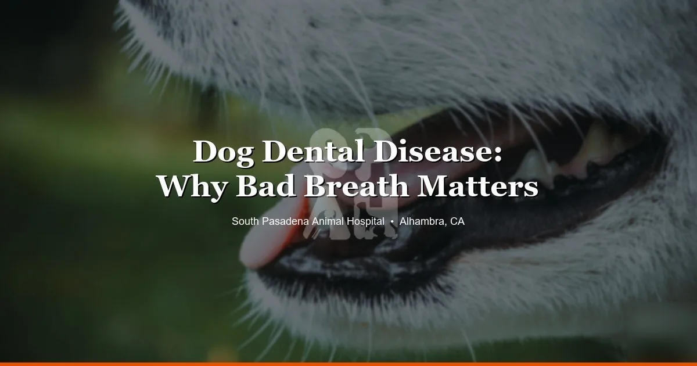

April 11, 2026 · 9 min read
11 Signs Your Dog Needs to See a Vet — From an Alhambra Animal Hospital 🚨

Most dog owners are somewhere between two failure modes: going to the vet for everything (which gets expensive and stressful for the dog) and waiting too long because "he seems fine." This guide is meant to help you find the middle. Here are the 11 signs we see most often that actually warrant a vet visit — some urgently, some soon, and some just so you know what's going on.
We're at South Pasadena Animal Hospital — your animal hospital in Alhambra. These are the calls we get every week.
1. Vomiting More Than Once — or Vomiting Blood
A dog who vomits once and then acts totally normal? Probably ate something disagreeable. A dog who vomits two or more times in a day, or can't keep water down, or vomits blood — that's a different situation. Repeated vomiting can indicate pancreatitis, a foreign body obstruction, kidney failure, or parvovirus in unvaccinated dogs. Come in same day or go to an emergency clinic if it's after hours.
2. Diarrhea for More Than 24 Hours, or Bloody Diarrhea
Loose stools once or twice, especially after a diet change or stress, usually resolves on its own. Diarrhea that lasts more than 24 hours, or any diarrhea with blood in it, needs to be seen. Bloody diarrhea in combination with lethargy and vomiting in an unvaccinated puppy is a parvovirus emergency — don't wait.
3. Not Eating for More Than 24–48 Hours
A picky dog skipping a meal is normal. A dog who refuses food for more than a day and seems lethargic or uncomfortable is telling you something. Loss of appetite is one of the most consistent signs that something is medically wrong — it's the body's response to infection, pain, nausea, and dozens of other conditions. Come in.
4. Difficulty Breathing or Labored Breathing
This is an emergency, full stop. If your dog is breathing rapidly at rest, breathing with visible effort, making unusual breathing sounds, or breathing with their mouth open and extended neck, they need to be seen immediately. Don't wait to see if it improves. Respiratory distress can deteriorate very quickly.
5. Suspected Toxin Ingestion
The list of things that are toxic to dogs is long: xylitol (in sugar-free products), grapes and raisins, chocolate, macadamia nuts, certain mushrooms, rat poison, many houseplants, ibuprofen and Tylenol. If you know or suspect your dog ate something they shouldn't have, call us or call the ASPCA Animal Poison Control Center (888-426-4435) immediately. Do not wait for symptoms to appear — with many toxins, waiting for symptoms means waiting until damage has already occurred.
6. Limping That Doesn't Resolve in 24 Hours
A mild limp after vigorous exercise might just be muscle soreness. But limping that persists for more than a day, gets worse, or is accompanied by swelling, heat in the joint, or complete inability to bear weight on the leg needs evaluation. Cruciate ligament tears, fractures, and joint infections all present as limping and get significantly worse with delayed treatment.
7. Swollen, Distended, or Painful Abdomen
A hard, bloated belly in a dog — especially a large-breed or deep-chested dog — is a potential emergency. Gastric dilatation-volvulus (GDV, or "bloat") is when the stomach twists on itself, cutting off blood supply. It's fatal within hours without surgery. Signs include a visibly distended abdomen, unproductive retching (trying to vomit but nothing comes up), restlessness, and drooling. If your dog shows these signs, go to an emergency vet immediately — this cannot wait.
8. Frequent Urination, Straining to Urinate, or Blood in Urine
These signs point toward urinary tract infections, bladder stones, or in male dogs, a urinary blockage. A male dog who is straining to urinate and producing nothing, or only tiny drops, may be blocked — a urological emergency. Female dogs with UTIs are uncomfortable but rarely in immediate danger; still, come in within 24 hours.
9. Unexplained Weight Loss
If your dog is eating normally but losing weight, something is consuming energy — cancer, diabetes, Addison's disease, intestinal parasites, kidney disease, hyperthyroidism (rare in dogs). Weight loss that you can see — visible ribs, spine, hip bones — is not subtle and shouldn't be watched at home. Come in for a physical exam and bloodwork.
10. Lumps or Bumps That Change Rapidly
Not every lump is cancer. Lipomas (fatty tumors) are extremely common in middle-aged and older dogs and are almost always benign. But a lump that appeared quickly, has grown noticeably over a few weeks, is firm and irregular, is ulcerated or bleeding, or is near a lymph node warrants evaluation. We can tell you a lot with a fine needle aspirate in-office — it's quick, inexpensive, and gives you real information.
11. Neurological Signs: Seizures, Loss of Balance, or Sudden Weakness
A first seizure needs to be evaluated, even if the dog seems normal afterward. Seizures have many causes — epilepsy, toxin ingestion, brain tumors, low blood sugar — and not all of them are emergencies, but all of them need a diagnosis. Loss of coordination (walking into things, listing to one side), sudden weakness in the hind end, or a dog who suddenly can't stand up are similarly urgent. Come in the same day or go to an emergency clinic.
When in Doubt, Call Us
We know it's hard to know what's urgent and what isn't. That's what we're here for. A two-minute phone call to our Alhambra clinic at (626) 441-1314 can tell you whether to come in today, make an appointment for later in the week, or monitor at home. We'd always rather you call than wait too long on something real.
We're at 3116 W Main St, Alhambra — Monday through Friday, 8 AM to 6 PM with a midday break. Book online or call us.